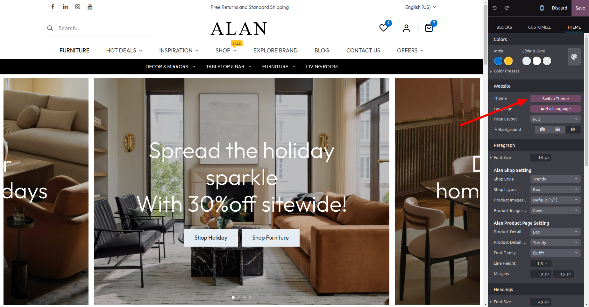
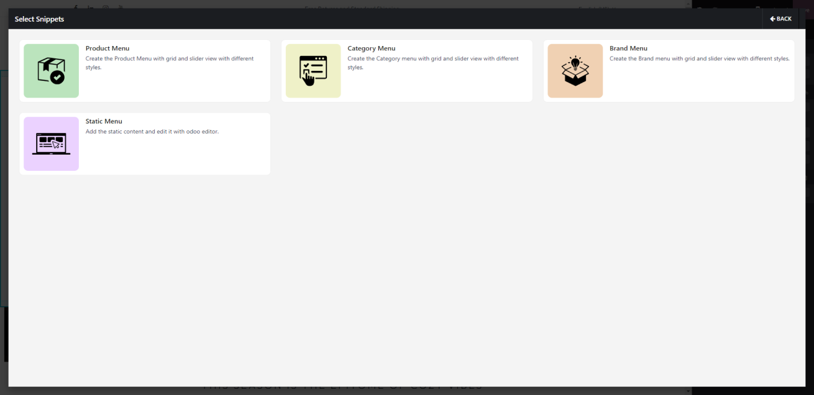
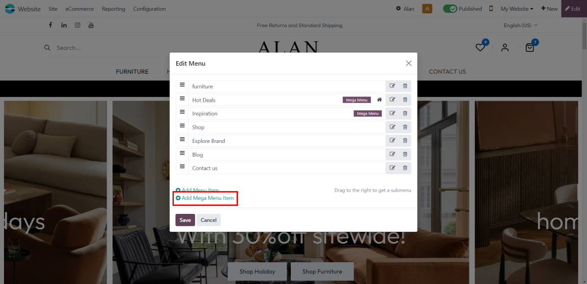
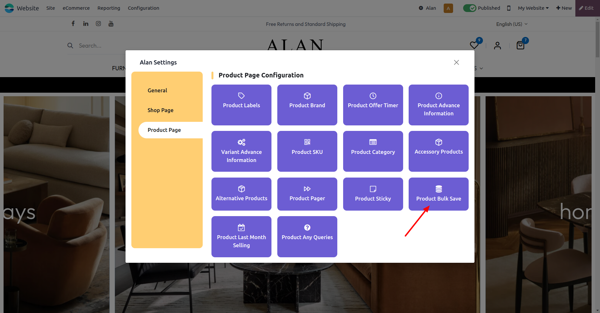
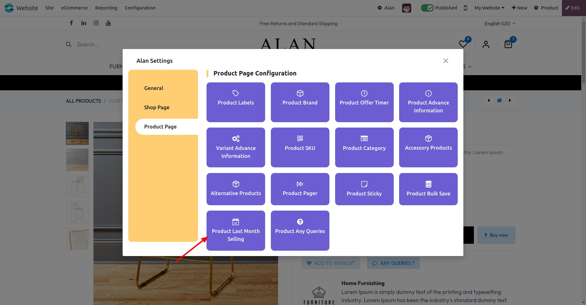
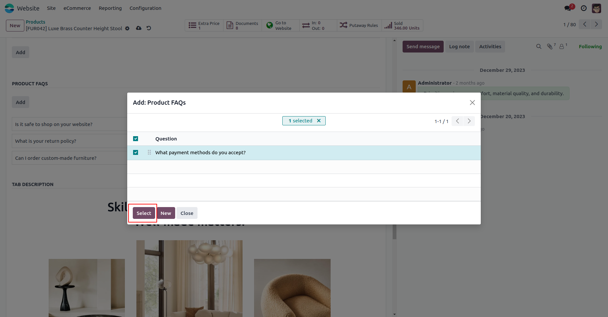
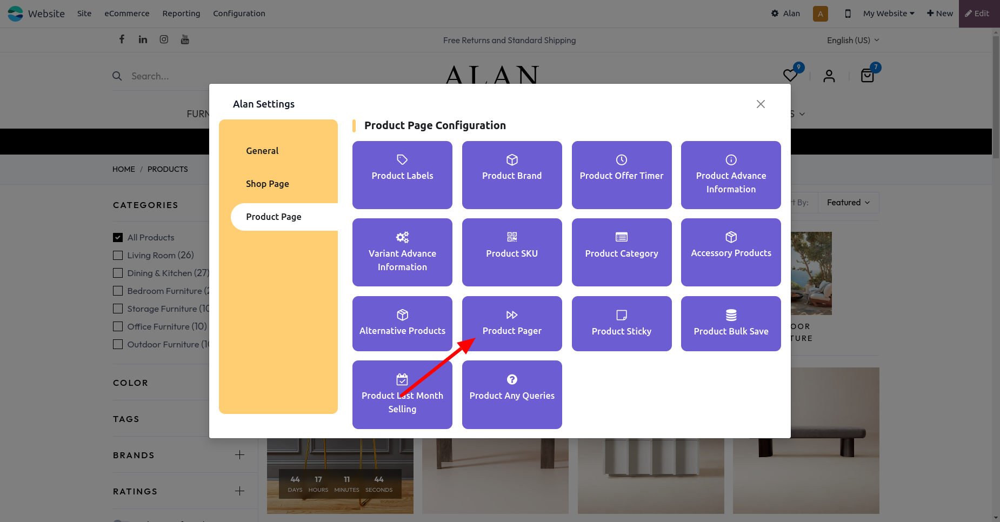
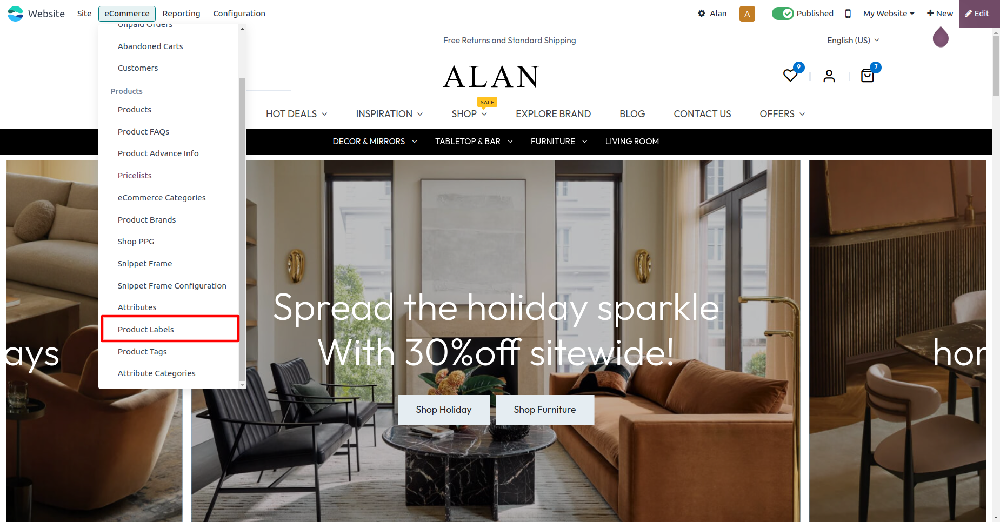

Theme Alan is one of the most powerful, amazing and flexible themes
on Odoo store. Multipurpose Premium Responsive Odoo Themes - Fashion,
Furniture, Sports, Jewellery, Corporate. Creative theme, Ecommerce
theme, Entertainment theme, Personal theme, Services theme,
Technology theme, Business theme, Multipurpose odoo theme,
Multi-purpose theme, Theme Alan, Odoo new themes,
Alan Theme, Bootstrap4 odoo themes, eCommerce Businesses, Odoo
RTL Theme, Right to left theme. Let’s start with
core theme feature of theme alan.
Installation
Download Theme Alan Modules and unzip both modules to your addons or custom addons folder and
restart Odoo Service
Now Activate Developer Mode:
Now go to Apps section and click on Update Apps List
Now go to the search bar and search Atharva Theme Base and click on install. When module is
install It will redirect you to website Configurator where you can select Theme Alan.
If you have theme already selected then you can change it from Switch Theme button from the website.

Alan Headers & Footers
In odoo we have different headers and footers options which we can use to set header and footer in
our theme and Theme Alan provides you additional more amazing headers and footers options which you
can use to create a more attractive website.
Theme alan provides you 10 amazing headers and Footers.
Let’s see steps to changes header and footer
Click on the edit button given at top right side.
Click on header or footer (based on which you want to change)
Now click on the template option where you can see our custom header or footer options.
Shop Layout
Theme Alan provides you 6 shop page layouts by which you have 5 different styles
for the shop page to display products and filters in a more amazing way and you can
use it and change whenever you want.
Let’s see steps to changes shop page layout
Click on the edit button given at top right side and then click on Theme option.
Now scroll down to the Alan Shop Setting section and select the Shop Style
Select the Shop Layout option to display the shop page in full size or box size.
Now check the shop page and you will find products and filters styles changes.
Image Hotspot
Theme Alan provides you Image hotspot functionality by which you can add hotspot on snippet images like given below.
Let’s see steps to configure Image hotspot on images.
Drag and drop any image snippet and change image whatever you like.
Now click on image then check on edit section you will find ‘Add hotspot’ option.
When you click on that button, the Hotspot icon is automatically added to the image and you can add a number of hotspot icons on the image with different styles.
Click on hotspot icon and check in edit section you will find on block section where you can configure hotspot actions.
Mini Cart
Theme Alan provides you mini cart functionality by which you can quickly
check cart details without redirecting to the cart page. It’s by default active
and we provide a switch by which you can turn off and on as per requirement.
Let’s see steps to configure mini cart.
Click on Alan given at the top.
Active Mini Cart.
Login Popup
Theme Alan provides you mini cart functionality by which you can quickly check
cart details without redirecting to the cart page. It’s by default active and we
provide a switch by which you can turn off and on as per requirement.
Let’s see steps to configure Login Popup.
Click on Alan given at the top.
Active Login Popup.
Megamenu Frame Builder
Theme Alan comes with powerful frame builder which allows you to create dynamic Snippets. We have 14+ snippet which you can use
frame builder.
Let’s see steps to configure Megamenu.
Go to edit mode and select megamenu which you want to edit.
Select our alan megamenu template from the megamenu template selection.
Once you click then Frame builder will open were you create your dynamic megamenu.
To edit the static snippet you need to turn on the Alan Snippet Editor switch.

Let’s see steps to configure Product Snippet.
Go to edit mode and Drag and Drop Alan Dynamic Snippet.
Once you drop then Frame builder will open were you can create your frame and add snippet in that.
To edit the static snippet you need to turn on the Alan Snippet Editor switch.
Go to website > Site > Menu Editor > Add New Mega Menu Item
Go to Configuration > Menus > Select Menu > Active Megamenu Tabs> Select Megamenu Tabs.
Go to edit mode and select megamenu which you want to edit.
Select our alan megamenu template from the megamenu template selection.
Once you click then Frame builder will open were you create your dynamic megamenu.

Advanced Mega Menu
Advance Megamenu as one of the powerful features of the Theme Alan.
This feature allows for the creation of hierarchical menus with multiple levels.
The Advanced Megamenu is designed with user-friendly configuration options, making it simple for website administrators to set up and customize menus according to their specific requirements.
This feature allows for the creation of hierarchical menus with multiple levels.
Let’s see steps to configure Advance Megamenu.
Go to Configuration > Advance Megamenu.
Create Menu and Choose the website where you want to configure the Megamenu.
Go to the Menu Configuration tab.
Create submenu items hierarchically to establish multi-level navigation.
Select Top Menu Style Tab and Configure additional options according to your preferences.
After configuring the menu, save your changes.
Go to Configuration > Websites.
Active Advanced Megamenu tab, activate the feature if it's not already active.
Choose the specific Megamenu configuration you created to display on the selected website.
Let’s see steps to configure Default Menus
Go to Configuration > Menus.
Now Select Menu > Active Advance Megamenu > Select Megamenu.
Quick View
Theme Alan provides you Quick View functionality by which users can quickly view products without redirecting to the product detail page.
It’s by default active and we provide a switch by which you can turn off and on as per requirement.
Let’s see steps to configure Quick View.
Click on Alan given at the top.
Active Quick View.
Product Brand
Theme Alan comes with Brand functionality by which you can create brands and you can assign that brand to any product.
Product brand information is only visible on product detail page and brand comes in filter to get accurate brand product.
Let’s see steps to configure Product Brand.
Go to admin in the website section.
Click on the Product Brand from the Product Menu given at the top bar.
Now create a brand and assign a product to that brand from product form view.
Advance Filter and Search
Theme Alan comes with additional filters like rating filter, brand filter and tag filter by which customers
can select their desired product more accurately. All the custom filters are active by default in the product filter.
To add search bar in product filter you need to active it from alan settings
Let’s see steps to configure Attribute Search.
Click on Alan given at the top.
Active Attribute Search.
Similar Product
Theme Alan comes with similar product functionality by which users can see similar products of any particular product.
Let’s see steps to configure Attribute Search.
Go to any product form view in admin.
In product form view click on Sales tab.
Go to the shop page and switch on similar products from the alan settings.
Click on a similar view icon on any product.
Product Bulk Save More
Theme Alan provides Product bulk save more, Show the amazing discounts on buying bulk quantity of product to the end users.
Let’s see steps to configure product bulk save more.
Go to admin in the website section.
Click on the Pricelist from the Product Menu given at the top bar.
Go to the Pricelist Rules tab.
Now create pricelist rules.
Click on Alan given at the top.
Active Product Bulk Save.

Product Ask Queries
Theme Alan provides product ask queries functionality by which users can Ask product Related Queries and
It allows users to input specific keyword,description, phrases, or attributes related to products.
Let’s see steps to configure product ask queries.
Go to the website > Navigate to the Odoo Apps > Settings.
Now Scroll down to the Website Selection and Shop - Product Inquiry Section.
Activate Inquiry Submit Action.
Select the Action for Sending Inquiries.
(For sending an email, ensure that you've configured the email template, recipient, and any additional settings related to the email sending process and
If creating an opportunity, make sure to define the criteria for creating an opportunity, such as assigning it to a salesperson, setting a priority, and linking it to the appropriate customer or lead.)
Product Sales Count
Theme Alan provides Product Sales Count, show how many units of a product were sold last month.
Let’s see steps to configure product sales count.
Click on Alan given at the top.
Active Product Last Month Selling

Product Rating
Theme Alan comes with a product rating switch on the shop page by which you can show the product rating on the shop page.
Let’s see steps to configure product rating.
Click on Alan given at the top.
Active Product Rating.
Clear Filter
Theme Alan comes with a dynamic clear filter which helps users to clear all applied filters on the shop page. By default this feature is active.
Hide Extra Attributes
The 'Hide Extra Attributes' feature in Theme Alan ensures that after applying a filter, only the matching attributes are displayed, while any unnecessary or extra attributes are hidden view. By default this feature is active.
Let’s see steps to configure hide extra attributes.
Click on Alan given at the top.
Active Hide Extra Attributes.
Quick Load Product
Theme Alan comes with a quick load product which helps users to get the next page product without reloading the page. By default this feature is active.
Product Tabs
Theme Alan comes with product tabs functionality in which you can add multiple tabs
on the product detail page. To add the product tab you need to configure the tab from admin side in product form view.
Let’s see steps to configure product tabs.
Go to any product form view in admin.
In product form view click on alan product configure.
Now create the tabs for that particular product.
Go to the product detail page and check your tabs.
Product FAQs
Theme Alan comes with product faqs functionality in Display quick answers to commonly asked questions in FAQs tab on the product detail page.
Let’s see steps to configure product faqs.
Go to eCommerce > Product FAQs.
Now Create the product faqs and product tabs selected Products.
Go to any product form view in admin.
In product form view click on alan product configure.
Now create the product faqs for that particular product.
Go to the product detail page and check your FAQS tabs.

Accessory & Alternative Product Sliders
Theme Alan provides you custom alternative and accessory product sliders.
You can configure accessory and alternative products from the admin section and you can on or
off any of these sliders from the alan settings.
Let’s see steps to configure accessory and alternative slider
Go to any product form view in admin.
In product form view click on sale.
Now add the product in accessory and alternative product fields
Go to the product detail page there you can see both slider which is turn off and on by alan settings.
Product Sticky Cart
Theme Alan provides you product sticky cart functionality which is very useful on product detail page when it
turns on then on scrolling down the sticky cart will appear that helps user to add the product in cart and if product have the
variant then on click it will take to you at top. By default this feature is active.
Product Pager
Theme Alan provides you product pager by which you can move one product to another.
You can active or inactive this feature from alan settings.
Let’s see steps to configure Product Pager
Click on Alan given at the top.
Active Product Pager.

Scroll Top
Theme Alan provides you scroll top by which you can move to top of the page.
You can active or inactive this feature from alan settings.
Let’s see steps to configure Product Pager
Click on Alan given at the top.
Active Scroll Top.
Offer Timer
Theme Alan provides you timer for discounted products based on pricelist.
To show offer timer you need to active it from alan settings.
Let’s see steps to configure Offer timer
Click on Alan given at the top.
Active Offer Timer.
Make sure in pricelist must contains products with start and end date.
Color Variant
Theme Alan provides you color variant option by which you can add the product image in the color attribute and show it on hover of that color and Display our color variant popup for color comparison.
To show color variant you need to active it from alan settings.
Let’s see steps to configure Offer timer
Add the color attribute in the product and add the image from attribute configuration.
Click on Alan given at the top.
Active color variant.
Stock Information
Theme Alan provides stock information feature by which you can show the stock information on the shop page.
Let’s see steps to configure Stock Information
Click on Alan given at the top.
Active Stock Information.
Brand Information
Theme Alan provides Brand information feature by which you can show the Brand name on the shop page.
Let’s see steps to configure Stock Information
Click on Alan given at the top.
Active Brand Information.
Hover image
Theme Alan provides hover image functionality which helps you to changes the product image on hover.
Let’s see steps to configure Hover image
Go to product admin side then add the image hover image field give in the alan product configurations.
Click on Alan given at the top.
Active Hover Image.
Product Labels
Theme alan label feature gives you ability to create lable for the product.
Let’s see steps to configure label for your product
Go the eCommerce -> Product Labels
Create the labels
Go to the product in the admin and set the label given the alan product configurations.
Click on Alan given at the top.
Active Labels.

Product Per Page
Theme alan gives ability to end user to set product per page based on their requirement on shop page.
Let’s see steps to configure product per page
Go the eCommerce -> Shop PPG
Create the Product per page
Click on Alan given at the top.
Active Product Per Page.
In Stock
Theme alan gives ability to end user to display only product which are available in stock.
Let’s see steps to configure Stock only
Click on Alan given at the top.
Active In Stock Only.
Product Advance Information
Theme alan gives ability to display Extra information about the product like offer and detail information about variant.
Let’s see steps to configure Product Advance Information
Go to eCommerce -> Product Advance Information
Add all the information and make don't forget to click on Design Dialog given at top right to add information in dialog.
If you select Information for: as "attribute" then you need to link this object with attribute.
Click on Alan given at the top.
Active In Product Advance Attribute ( For Detail Information).
Active In Product Advance Attribute ( For Attribute Information)
Product Reference (SKU)
Theme alan gives ability to display Product Reference Code.
Let’s see steps to configure Product Reference Code
Go to the product admin side and set Internal Reference field.
Click on Alan given at the top.
Active In Product Reference Code.
Product Documentation
Theme alan gives ability to give documents to the end-user related to the product like installation, warranty etc.
Let’s see steps to configure Product Documentation
Go to the product admin side and add the documents in the alan product configurator
If you need the template customization or custom development
services please contact us.